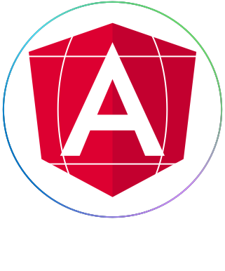

@if (sideNavLinks) {
  <div class="sticky-navigation">
    <div class="h-100">
      <div class="components">
        <div class="w-100 justify-content-center d-flex">
          @if (isNormalTheme) {
            
          }
          @if (!isNormalTheme) {
            
          }
        </div>
        <section class="p-4">
          <section class="mt-2 mb-3 px-4">
            <ngx-fluent-design-toggle [inlineLabel]="true" (change)="toggleTheme()" [label]="'Toggle dark mode'" [toggled]="!isNormalTheme"></ngx-fluent-design-toggle>
          </section>
          <section class="mt-2">
            <p>Current Version: {{currentPackageVersion}}</p>
            <a ngxFluentDesignLinkButton class="mt-3" routerLinkActive="active" [routerLink]="['', 'home', 'welcome']">Home</a>
          </section>
          <h4 class="pane-header">Components</h4>
          <hr>
            <div class="components-links d-flex flex-column">
              @for (item of sideNavLinks; track item) {
                <section>
                  @if (item.shouldDisplayOnLive || !isProdEnvironment) {
                    <section class="component-section">
                      <h5 class="subject-title">{{item.title}}</h5>
                      @for (link of item.subNavItems; track link) {
                        @if (link.shouldDisplayOnLive || !isProdEnvironment) {
                          <a ngxFluentDesignLinkButton
                            routerLinkActive="active"
                            [routerLink]="link.routerLink">{{link.title}}
                          </a>
                        }
                      }
                    </section>
                  }
                </section>
              }
            </div>
          </section>
        </div>
      </div>
    </div>
  }
